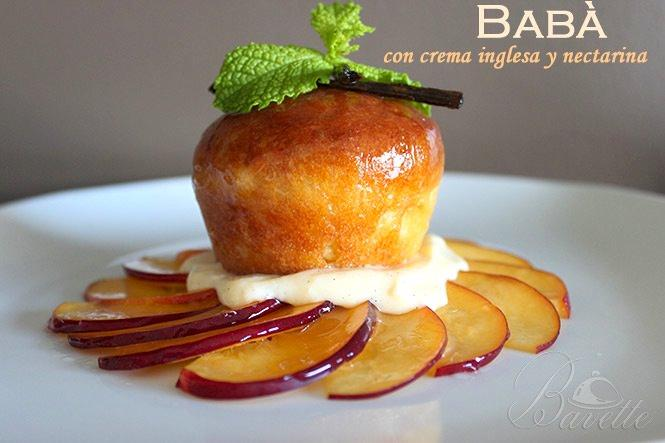

La Buena Cuchara!!!
Mis Favoritos


Historial
Pizza de brócoli sin harina 15/07/2018
Para saber cómo hacer una pizza de brócoli sin harina en la masa no te pierdas esta receta fácil y rápida porque en tan solo 15 minutos puedes tenerla lista si sigues este paso a paso que te indicamos en RecetasGratis. Aparte de ser apta para celíacos, esta masa de pizza sin harina con base de brócoli es ideal para todas aquellas personas que quieran cuidar la línea y comer algo más saludable y menos calórico que la tradicional. ¡Os va a encantar!.
Saltimboca de ternera, jamón y salvia 22/6/2018
La saltimboca es comida rápida de alto nivel. Supongo que habrá
versiones laboriosas, pero la que hago yo está lista en unos 15 minutos.
Si no me equivoco, mi receta se basa en la saltimboca típica de Roma,
que apuesta por un trío tan simple como exquisito: ternera, jamón y salvia.
Este plato admite otras variantes: usar filetes de pechuga de pollo
en vez de ternera, o variar el tipo de vino, siempre que sea un poco dulce.
Lo que no se puede cambiar de ninguna manera es la salvia, ese
prodigio hecho hierba que es el alma de la saltimboca.
Callos a la Madrileña. 05/05/2018
Plato típico de la Comunidad de Madrid donde los haya. Esta
receta se toma preferiblemente en días fríos pero los amantes
de los callos no siguen a rajatabla esta regla.
Este ingrediente, procede de la casquería, principalmente son
trozos del estómago de ternera guisados pero no te dejes engañar
por su aspecto, sin duda te sorprenderá. Suele servirse en cazuela
de barro para que mantenga el calor acompañado de morcilla y como
no, de chorizo y unas puntas de jamón serrano.
Como veis, un plato contundente, que deberás acompañar con su
correspondiente siesta, tan típica de la inmensa castilla española.
BABÀ CON CREMA INGLESA Y LÁMINAS DE NECTARINA 21/04/2018
El babà es un dulce que se elabora en el horno , es muy tradicional y conocido en la ciudad italiana de Nápoles , mi tierra, y también en Francia. Tiene una forma de corona cuyo diámetro puede variar entre los 5-7 cm hasta los 35-40 cm. Una de las principales características es que la masa es mucho más ligera que la del bizcocho y está empapada en algún tipo de licor, habitualmente ron o limoncello.